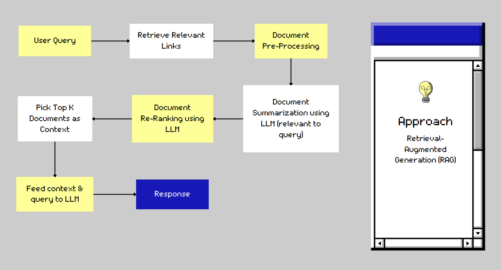

Overview
tamuGPT is a sophisticated chatbot from Texas A&M, implemented with Retrieval Augmented Generation (RAG) architecture. A workflow of the model is provided below.

Architecture Design
Taking the user input:
- User Query: The process begins with capturing the user's query.
Leveraging Google Search:
- Information Retrieval with Google Search API: tamuGPT utilizes the Google Search API to retrieve a set of potentially relevant documents (e.g., top 10 links) that address the user's query.
Data Preparation:
- Preprocessing and Cleaning: The retrieved content undergoes pre-processing to remove irrelevant information such as headers, footers, and HTML tags.
Content Analysis with GPT-3.5:
- Summarization: The pre-processed content is then passed to GPT 3.5 model to summarize the relevant content.
- Reranking: The summarized content is re-ranked by GPT 3.5 model.
Response Generation:
- Response: Based on the user's query, the top k (e.g., top 7) ranked summaries, and the insights gained from accessing the original retrieved documents (through RAG), GPT-3.5 generates the final response.
- Source Attribution: The final response includes information about the sources used (URLs) allowing users to access the original content.
Depending on the requirements, GPT 3.5 is invoked with different templates to perform the ranking, summarization and answer the query based on the context.